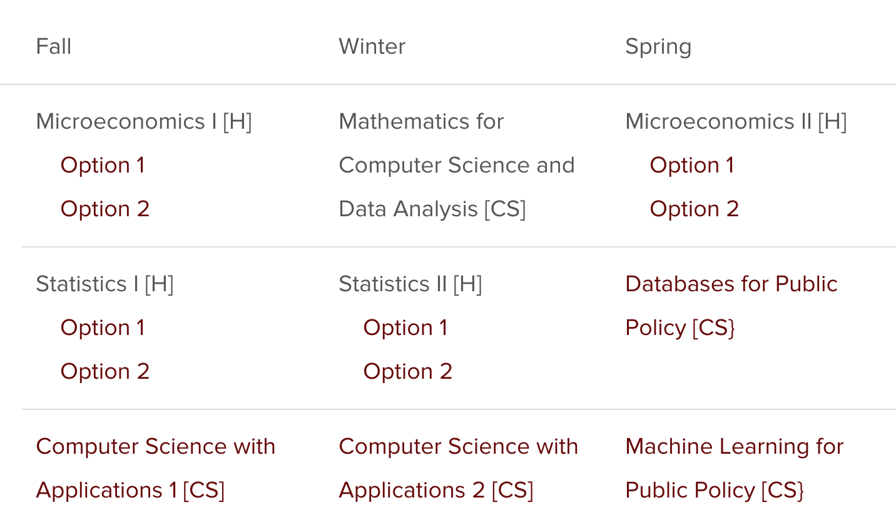
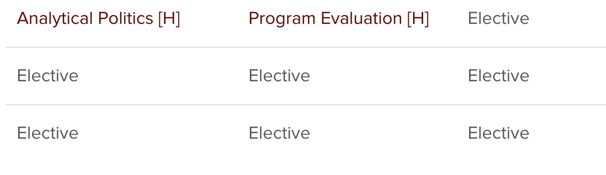
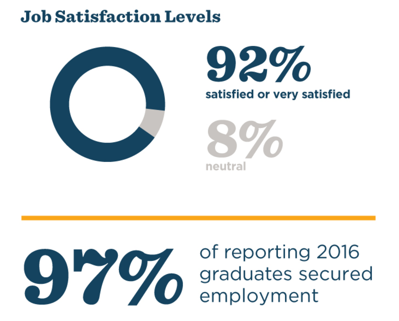
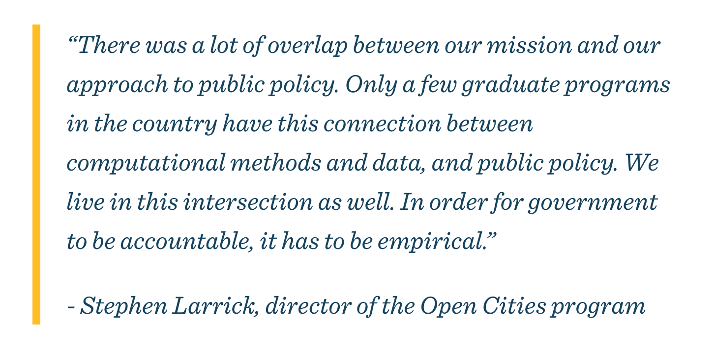
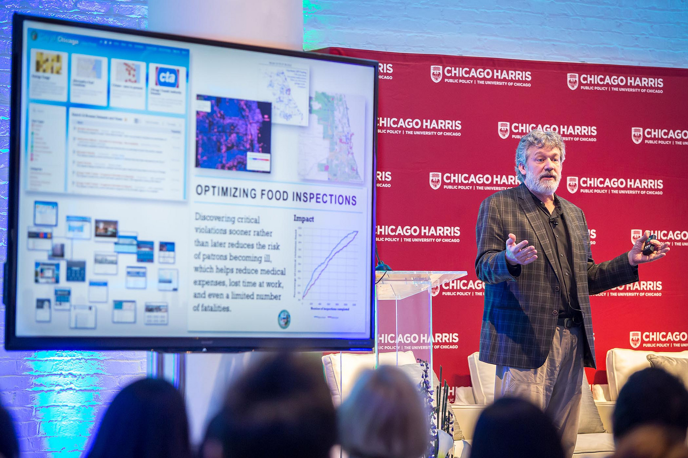
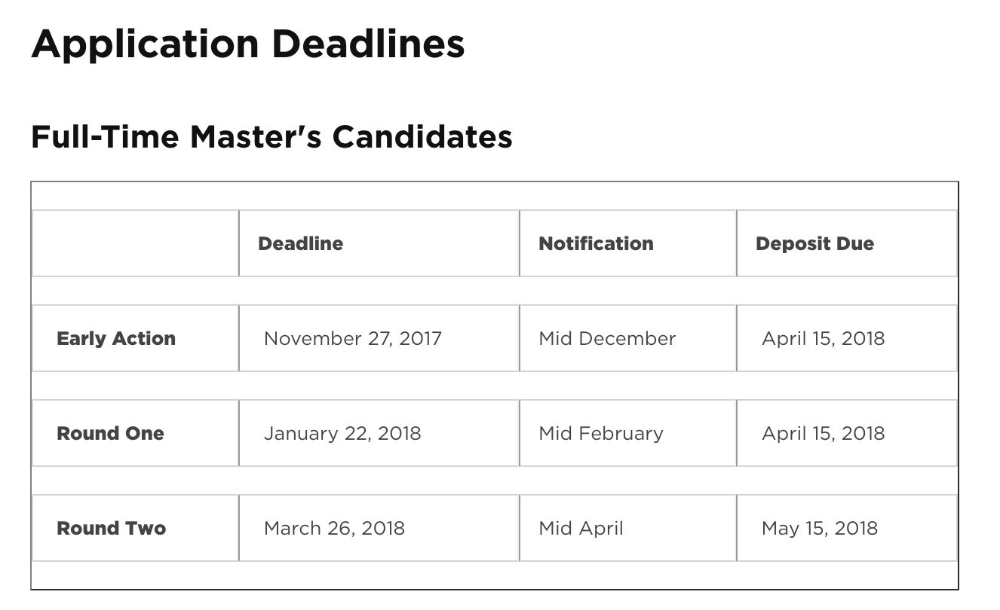
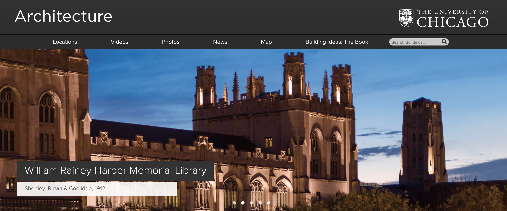

M.S. in Computational
Analysis and Public Policy
Department of Computer Science
The best minds of my generation are thinking about how to make people click ads. That [stinks].
Jeff Hammerbacher
Curriculum
LinkCurriculum (Year One)
Curriculum (Year Two)
Electives from any UChicago Graduate Program, including:
- CAPP Specific Electives
- Harris School of Public Policy
- Department of Computer Science
- Toyota Techology Institute @ Chicago (TTIC)
- Economics Department
- Statistics Department
- Booth School of Business
- UChicago Law

Data Scientist

Director of a Data Analytics Team

Visual Journalism Internship

by Vivian Hou
Career Outcomes
Harris School Job Placement & Satisfaction
MS-CAPP Graduates have become:
- Data Team Leaders
- Data Scientists & Engineers
- Policy Researchers & Analysts
- Applications Developers
- Technical Project Managers
Maggie King - Former MS-CAPP Director
STEM Certified Degree
The program qualifies for the STEM OPT Extension, which grants three years of employment time for international students.
Experience
Rayid Ghani's Center for Data Science
& Public Policy

Chicago Urban Labs

Other Related Centers
& Research Opportunities
Facilitated Internships
Speakers and Events
Speakers and Events
- CAPP Friday Seminars
- Harris School Events
- Institute of Politics
- TTIC Distinguished Lecture Series
- Events at the Affiliated Centers
- Chicago Data Community [ChiHackNight], [ChiPy], [R Ladies Chicago]
Application Process
Apply OnlineWhat Makes a Strong Candidate?
- Strong Quantitative Background (GRE/Grades);
- Interest in Public Policy & Social Good;
- Excellent Academic History;
- Some Work Experience Helps, but isn't required;
- Genuine Intellectual Curiosity.
Note there's no Computer Science requirement!
Requirements
- Resume
- Short Essay
- Motivation Statement
- Transcripts
- Three Letters of Reccomendation
- GRE Scores (Code 1849)
- TOEFL Scores (International Candidates)
More Information
Deadlines
UChicago Life
Keller Center [Link]
University of Chicago Campus [Link]
Obama Presidential Library
Learn More
- Reach Out: alexcengler@uchicago.edu
- Follow Us on Twitter
- Come Visit Campus
- See the campus and take a tour;
- Meet current students over coffee;
- Sit in on a class.